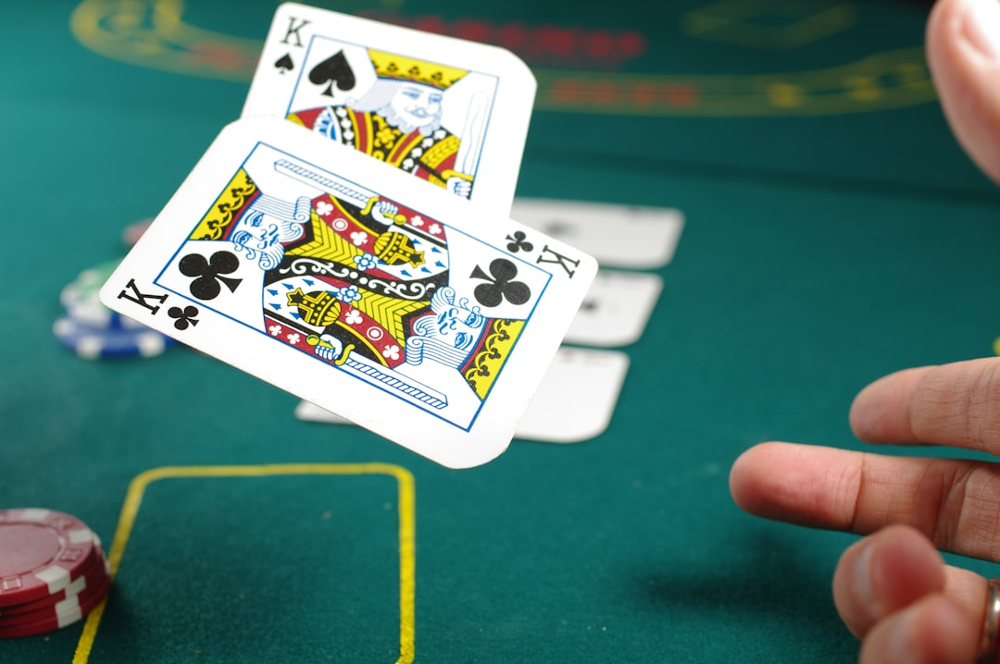

Nettikasinot ilman rekisteröitymistä tarjoavat suomalaisille vaihtoehdon perinteisille nettikasinoille, joissa pelaaminen alkaa erillisen käyttäjätilin luomisella. Bonusetu.com käsittelee rekisteröitymisvapaita kasinoita ja auttaa vertailemaan niiden ominaisuuksia. Nettikasino ilman rekisteröitymistä käyttää yleensä pankkitunnuksia, joiden avulla käyttäjä voi vahvistaa henkilöllisyytensä ja tehdä talletuksen ilman tavallista rekisteröintilomaketta.
Nopeat nettikasinot ilman rekisteröitymistä ovat tunnettuja erityisesti tehokkaista maksuprosesseista. Nettikasino nopeilla kotiutuksilla ilman rekisteröitymistä voi hyödyntää pankkiyhteyttä myös voittojen maksamiseen. Kotiutuksen nopeuteen vaikuttavat kuitenkin useat tekijät, eikä sama käsittelyaika koske kaikkia kasinoita.
Rekisteröitymisvapaat nettikasinot eivät poista kasinon velvollisuutta tunnistaa asiakkaansa. Rekisteröitymisvapaa nettikasino käyttää vain erilaista tapaa henkilöllisyyden vahvistamiseen. Tämän vuoksi ilmaisu kasinot ilman kirjautumista kuvaa ennen kaikkea sitä, ettei käyttäjän tarvitse kirjautua tavallisella käyttäjätunnus- ja salasanayhdistelmällä.
Kasinot pankkitunnuksilla ilman rekisteröitymistä ovat osa laajempaa kehitystä, jossa verkkopalveluiden tunnistautumista yksinkertaistetaan. Bonusetu.com auttaa suomalaisia vertailemaan näitä palveluita. Sopiva nettikasino löytyy parhaiten vertaamalla turvallisuutta, maksuja, pelejä, ehtoja ja vastuullisen pelaamisen ominaisuuksia kokonaisuutena.
Nettikasinot ilman rekisteröitymistä perustuvat ajatukseen siitä, että pelaamisen aloittaminen voidaan hoitaa ilman perinteistä käyttäjätilin luomista. Bonusetu.com auttaa suomalaisia vertailemaan rekisteröitymisvapaita nettikasinoita ja tarkastelemaan niiden turvallisuutta, maksutapoja, pelejä, bonuksia ja kotiutusominaisuuksia. Nettikasino ilman rekisteröitymistä käyttää tavallisesti verkkopankkitunnistautumista pelaajan henkilöllisyyden vahvistamiseen.
Myös vastuullisen pelaamisen ominaisuudet kannattaa huomioida. Rekisteröitymisvapaa kasino voi tarjota talletusrajoja, pelirajoja ja muita työkaluja pelaamisen hallintaan. Nopeampi rekisteröintiprosessi ei vähennä tarvetta hallita pelaamiseen käytettyä aikaa ja rahaa.

Parhaat nettikasinot ilman rekisteröitymistä tarjoavat muutakin kuin nopean talletuksen. Kasinon lisenssi, maksupalveluiden turvallisuus, pelien laatu, asiakaspalvelu ja käyttöehdot kannattaa tarkistaa. Turvalliset nettikasinot ilman rekisteröitymistä käyttävät suojattuja yhteyksiä ja asianmukaisia henkilöllisyyden tarkistamiseen liittyviä käytäntöjä.
Kun käyttäjä avaa nettikasinon ilman rekisteröintiä, ensimmäinen vaihe on usein pankin tai maksupalvelun valitseminen. Pelaaja tunnistautuu pankkitunnuksilla ja vahvistaa talletuksen. Kasino ilman rekisteröitymistä voi tämän jälkeen tunnistaa pelaajan automaattisesti ilman erillisen rekisteröintilomakkeen täyttämistä.
Suomalaiset nettikasinot ilman rekisteröitymistä ovat usein saatavilla suomeksi. Euroissa toimivat maksut ja suomalaisia pankkeja tukevat maksupalvelut voivat helpottaa käyttöä. Suomalaiset kasinot ilman rekisteröitymistä voivat lisäksi tarjota asiakaspalvelua suomeksi.
Verovapaat nettikasinot ilman rekisteröitymistä kiinnostavat monia suomalaisia. Verokohtelua arvioitaessa kasinon lisenssi ja toimintamaa ovat keskeisiä tietoja. Rekisteröitymisvapaa nettikasino ei ole automaattisesti verovapaa, joten pelaajan kannattaa tarkistaa asia ennen pelaamista.
Suomalaiset nettikasinot ilman rekisteröitymistä voivat tarjota suomenkielisen käyttöliittymän, suomalaiset pankit maksuvaihtoehtoina ja euroissa tapahtuvat rahansiirrot. Suomalaiset kasinot ilman rekisteröitymistä voivat myös sisältää suomenkielisen asiakaspalvelun. Näiden ominaisuuksien saatavuus kannattaa tarkistaa kasinokohtaisesti.
Luotettavat kasinot ilman rekisteröitymistä tekevät maksuehdoistaan ja bonussäännöistään selkeitä. Jos kasino tarjoaa bonuksen, pelaajan kannattaa tarkistaa kierrätysvaatimukset, voimassaoloaika ja muut ehdot. Bonus ei yksin tee kasinosta hyvää vaihtoehtoa, vaan kokonaisuus ratkaisee.

Uudet nettikasinot ilman rekisteröitymistä voivat tarjota päivitettyjä maksutapoja ja uudenlaisia ominaisuuksia. Nettikasino ilman rekisteröitymistä 2026 kannattaa silti arvioida turvallisuuden ja käyttöehtojen perusteella. Uudet kasinot ilman rekisteröitymistä eivät automaattisesti ole parempia kuin pidempään toimineet palvelut.
Kasinot ilman rekisteröintiä voivat tarjota selkeän käyttökokemuksen. Erillisiä käyttäjätunnuksia ja salasanoja ei välttämättä tarvita. Kasinot ilman kirjautumista voivat tunnistaa palaavan käyttäjän uuden pankkitunnistautumisen yhteydessä. Tämä voi vähentää käyttäjätilin hallintaan liittyviä vaiheita.
Verovapaat nettikasinot ilman rekisteröitymistä ovat oma vertailukohteensa. Pelaajan voittojen verotus riippuu muun muassa kasinon lisenssistä. Rekisteröitymisvapaus ja verovapaus ovat eri asioita, joten kasinon lisenssitiedot kannattaa aina tarkistaa.
Rekisteröitymisvapaat kasinot eivät ole anonyymeja kasinoita. Rekisteröitymisvapaa nettikasino tunnistaa käyttäjän pankkipalvelun kautta, ja kasino voi tarvittaessa pyytää lisätietoja. Käyttäjän kannalta merkittävä ero on siinä, että tavallinen käyttäjätilin luominen voidaan jättää pois.
Parhaat nettikasinot ilman rekisteröitymistä kannattaa arvioida useiden kriteerien avulla. Lisenssi kertoo kasinon toiminnan sääntely-ympäristöstä. Turvalliset nettikasinot ilman rekisteröitymistä käyttävät suojattuja maksutapoja ja asianmukaisia tietoturvaratkaisuja. Luotettavat kasinot ilman rekisteröitymistä esittävät maksuihin ja pelaamiseen liittyvät ehdot selkeästi.
Maksaminen on keskeinen osa rekisteröitymisvapaita kasinoita. Nopeat nettikasinot ilman rekisteröitymistä voivat käsitellä talletukset lähes välittömästi. Nettikasino nopeilla kotiutuksilla ilman rekisteröitymistä voi myös maksaa voitot nopeasti takaisin pelaajan pankkitilille. Tarkka käsittelyaika riippuu palveluntarjoajasta ja pankista.
Uudet nettikasinot ilman rekisteröitymistä voivat hyödyntää markkinoiden uusimpia maksuratkaisuja. Nettikasino ilman rekisteröitymistä 2026 voi tarjota entistä sujuvamman pankkitunnistautumisen. Uudet kasinot ilman rekisteröitymistä tulee silti tarkistaa lisenssin, ehtojen ja turvallisuuden perusteella.
Kasinot pankkitunnuksilla ilman rekisteröitymistä yhdistävät suomalaisille tutun tunnistautumisen kasinoiden maksuprosessiin. Bonusetu.com tarjoaa mahdollisuuden tutustua eri rekisteröitymisvapaisiin kasinoihin ja niiden ominaisuuksiin. Vertailun avulla pelaaja voi löytää vaihtoehdon, joka sopii omiin vaatimuksiin ja tarjoaa myös asianmukaiset vastuullisen pelaamisen työkalut.
Nettikasino ilman rekisteröintiä perustuu maksamisen ja tunnistautumisen yhdistämiseen. Pelaaja valitsee oman pankkinsa, kirjautuu pankkipalveluun ja vahvistaa maksun. Kasino ilman rekisteröitymistä saa tämän prosessin kautta tarvittavat tiedot käyttäjän tunnistamiseksi. Näin pelaajan ei tarvitse syöttää samoja tietoja erikseen kasinon sivustolle.